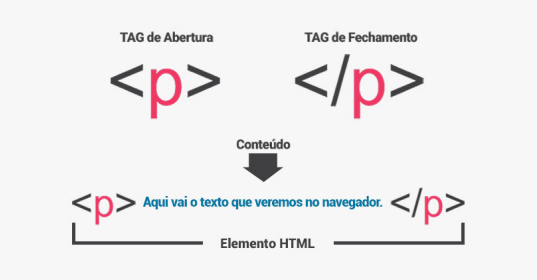

HTML - Hyper text Markup Language em português é Marcação de Hyper Texto. Esse documento é formado por meio de TAGS que permite outros computadores compreenderem.
Elas marcam o começo e fim de um conteúdo específico no documento. Ela tem a responsabilidade de marcar a estrutura de uma página web.
As Tags possuem <abertura> conteúdo </fechamento>. OBS: Nem todas as tags necessitam de fechamento.
<!DOCTYPE html>
<html! lang="en"> </html>
lang.
<head> </head>
<meta name="viewport" content="width=device-width, initial-scale=1.0">
<title>Document</title>
<body> </body>
heading tags podem ser traduzidas para "tags de cabeçalho" e seguem uma escala de 1 a 6, ou seja h1 a h6, com o intuíto de estabelecer uma ordem hierárquica das informações. Elas idicam a que techos de conteúdo devem ser vinculados o título, subtítulo e tópicos de destaque da página.
Para descrever nosso conteúdo escrito:

Para exibir listas em documentos, temos 3 tipos de opções, uma para listas ordenadas <ol>(ordered list), outra para listas não ordenadas <ul>(unordered list) e outra para termos e definições <dl>(definition list).
<ol>
<li> item 1 </li>
<li> item 2 </li>
<li> item 3 </li>
<li> item 4 </li>
</ol>
<ul>
<li> item 1 </li>
<li> item 2 </li>
<li> item 3 </li>
<li> item 4 </li>
</ul>
<dl>
<dt>HTML</dt>
<dd>Linguagem de marcação utilizada para criar o conteúdo de sites.</dd>
<dt>CSS</dt>
<dd>linguagem de marcação para especificação de estilos em sites.</dd>
<dt>JavaScript</dt>
<dd>Linguagem de programação para criar interatividades em sites.</dd>
</dl>
Também podemos fazer uso de medias em nossos documentos, as imagens são um ótimo meio de expressar uma ideia. Colocamos elas no documento HTML.
Uma das tags mais importantes da web, graças a ela podemos associar sites a outros.
<iframe>
<a href=>"https://gustavoguanabara.github.io" target="_blank">
Abre outra aba para o site.
</a>
<a href=>"https://gustavoguanabara.github.io" target="_self">
Continua navegando no site.
</a>
<a href=>"https://gustavoguanabara.github.io" target="_top">
Exibe o link em todo o espaço do navegador.
</a>
<a href=>"https://gustavoguanabara.github.io" target="_parent">
O site é exibido no FRAMESET.
</a>
<a href=>"https://gustavoguanabara.github.io" target="NomeFrame">
Vai para o frame específico.
</a>
Essa tag incorpora outro documento no documento HTML.